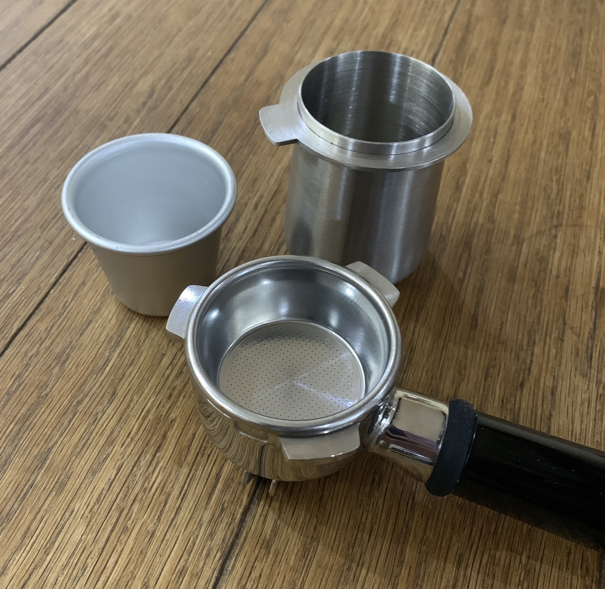

Learning latte
with the Sage/Breville Barista Express

I've always leaned towards the small independent coffee shops rather than the larger chains, appreciating that some coffee is better than others, but never really understanding why. I've heard people talking about the various flavours they could taste in espresso, but I've always thought that "coffee just tasted like coffee". A small coffee shop in Australia opened my eyes a few years ago by serving the most amazing espresso I'd ever tasted. It was a single-origin and, for the first, it didn't just taste of coffee. It was fruity!
I purchased a Sage/Breville Barista Express in September 2020, as a replacement for a Nespresso machine. The Nespresso machine is very convenient, but I wanted something better, especially as I primarily drink latte. My initial results with the Barista Express were good, but very inconsistent. This is a short guide to my experiences using the Barista Express, and how I achieve good consistent results with the single-wall (non-pressurised) double-shot basket.
This guide should also help to answer the typical question I see people asking too:
I've just bought a Barista Express, my shots are too fast even though I'm at the finest grinder setting and/or have changed the internal burr ... what am I doing wrong?
Initial experiences and inconsistent results
By the time the machine arrived in the mail, I'd already watched a bunch of YouTube videos about dose, yield, grind size, timing, sour vs bitter, etc. I'd bought a bag of fresh, medium roasted, fruity, single-origin beans, and was ready to dial them in. I thought I was prepared, but I was wrong.
After filling the hopper with beans, I set the grind size somewhere in the middle ("8"), ground 18g of beans into the portafilter, levelled the coffee, tamped, and brewed a shot. The initial shots ran fast (<15 seconds), smelt sour, and definitely tasted sour. Plus the pressure gauge was only just inside the "espresso zone". I knew that "sour" meant under-extracted, and I wasn't getting enough pressure on the gauge, so I made the grind size finer, and tried again. Same result. Time to grind finer, and try again. Same result. I repeated this a few times, and eventually got down to a grind setting of "1", without any real change.
I did some research, and saw you could change the internal burr setting, to make the grind even finer. I switched this from "6" to "5", reset the outer grind setting to the middle again ("7"), and repeated the process until I managed to choke the machine. After this, I set the grind size one step coarser and left it at that. The resulting espresso was now pouring in the desired 25-35 second range, but still smelled and tasted sour. The tasting notes said, "tangy berries". I wasn't getting that, but I'd not tasted the coffee prepared using this bean, so I thought that was perhaps just how it was supposed to be. It wasn't unpleasant, and I did get some good lattes.
I'd read that light-medium roasted beans are harder to dial in, so I switched beans, with the next bag being a darker roast. These beans were a bit easier to dial in. The grind setting was coarser, the espresso flow looked more consistent, and I could definitely taste the chocolate flavour mentioned in the tasting notes. But the darker roast was a bit too much for me, so I went back to something medium roasted and fruity for the next bag. Dialling in beans was certainly getting easier, and I was now sometimes able to recognise some of the mentioned tasting notes. But everything was just so inconsistent. Some shots would gush, and some would choke. Some espressos would be rich with crema, with others being watery and thin. Some pours started out slow and steady, but then they'd switch to a gushing watery stream half way through. Trying to stop the yield at a specific weight was often hopeless. If I was aiming for a 36g yield, I'd try to stop the machine at 32g, to account for the drips that happen after shutting off the machine. Sometimes that would work, and sometimes I'd get 10-15g of liquid gush through the portafilter into the cup below (even after stopping the machine), completely missing my target.
I did some research on possible causes, which led me to "channeling", where the high pressure forces water through weak spots in the coffee puck. So I tried a few things to better distribute the coffee, including WDT. This didn't help, which surprised me. I then decided to get a palm tamper/distribution tool, in a bid to improve the consistency. This didn't help either - initially anyway, but more on that later.
At this point I was getting some great tasting coffee (especially with milk), but it was hugely inconsistent. Looking back, my resulting shots were very different to what that are now:
- Then: espresso body was slightly watery; crema would be thin or not cover the entire shot, and dissipate quickly.
- Now: body is much richer and darker; espresso pours like Guinness (a slow separation of liquid and crema into distinct layers), crema is thick and lasts much longer.
I knew that I was doing something wrong, but I couldn't figure out what it was. So I bought a bag of supermarket espresso blend beans (because they were cheaper) to experiment with. A dozen shots later (don't worry, I wasn't drinking it!), I'd managed to start pulling consistent smooth flowing shots. I'd finally stumbled upon what I was doing wrong - distribution and tamping.
Quick review
The Barista Express is a deservedly popular espresso machine, and there are lots of reviews out there, so I'll make mine quick. It's a fabulous machine for the price, and only needs a few additional accessories (a small 0.1g accuracy scale, a dosing cup, and a distribution tool) to make fantastic coffee. The major complaints/issues/questions you'll see from people online (e.g. on r/espresso) are:
- Grinder: You'll see people complaining about the quality and consistency of the grinder, and how the grinder "can't grind fine enough for espresso". I don't believe that Sage/Breville would include a grinder that isn't capable of grinding for espresso, built-in to an espresso machine. That doesn't make sense to me. I've only had one bag of beans that I couldn't quite grind fine enough for my taste (a natural processed bean), and a review of the Breville Smart Grinder Pro (which I believe has the same internals) says that it's one of the better/more consistent entry-level grinders. In a nutshell, the grinder is okay, and the only real issue is that the steps between grinder settings are sometimes (not always) too big. But it's an entry-level machine, and I probably don't have the palate to notice such small changes anyway. Occassionally, with some coffees, there's no mid-point between choking the machine and a shot running slightly too fast. There is a stepless mod that you can do, or you can hold the grinder wheel between the steps.
- Steaming power: You'll see people complaining about how the machine "doesn't have enough power to make good quality microfoam". It does - see steaming milk for some photos of what you can achieve. Steaming milk is certainly slower than more expensive machines though. It takes me 50-60 seconds to steam enough milk for a 12oz latte, and 30-40 seconds for an 8oz latte (in a smaller jug). I rarely make more than 2 milk-based drinks back-to-back at a time, so this isn't a big issue for me.
- Consistency: You'll see people complaining about how the machine "doesn't provide consistent results from shot to shot". I've suffered from this, but I've resolved it by working on my workflow and puck preparation (see troubleshooting).
I suspect most of the complaints are the result of user error, by people with no prior experience of making espresso. I say that because I've been there myself! 😀 It's easy to jump to conclusions about how the Barista Express "isn't capable", but the truth is that making great espresso has a huge learning curve. And that learning curve applies whether you buy a £500 entry-level machine, or something that costs in excess of £2,000.
Should you buy one?
I would definitely recommend the Barista Express if you're primarily making one or two milk-based drinks at a time, or you want fantastic espresso on a budget. If you're interested in making perfect espresso with absolute precision, you'll be better off looking elsewhere - the large grinder steps and high brewing pressure might not allow you to achieve the results you're looking for. That said, I can still make better espressos and lattes than the majority of cafes I've been to, so I consider the Barista Express to be a fantastic machine for the price.
When should you upgrade the machine and/or grinder?
It's easy to get "upgraditis", and think that upgrading the machine will allow you to make better espresso. So when should you upgrade from the Barista Express? One answer is that you have lots of disposable income, and like shiny new things. If you browse r/espresso, you'll definitely find questions that like, "I just bought a Rocket Appartamento|Profitec 700|ECM Synchronika|La Marzocco Linea Mini as my first espresso machine, and my shots are always sour, and run in less than 15 seconds - is my machine broken?". There's that learning curve again!
Another answer is that you feel the Barista Express is holding you back. Perhaps you're regularly making milk-based drinks for large groups of friends, and the machine is genuinely slowing you down. In that case, a dual boiler machine would be a good upgrade, because you'll be able to pull espresso shots and steam milk at the same time.
Or perhaps you think an upgrade will make your coffee taste better. It certainly might do, but you should ask yourself whether you'll be able to taste the difference. Given three different tasting notes on a bag of beans, I'll always be able to taste one of them (usually the first), and I sometimes might taste one of the other two. Upgrading to a Niche Zero grinder might unlock those other tasting notes, and allow me to dial in shots with more precision. But I have doubts as to whether I'd be able to taste them to be honest, and I usually drink lattes anyway. I find wine, single malt whisky, IPA, and single-origin chocolate the same - I can taste one or two of the tasting notes, but usually not the others. So I'm not sure that I have a capable/trained enough palate to notice the difference in a grinder upgrade.
Workflow - tl;dr
So let's step back, what steps are required to get consistent espresso shots? Here's a quick summary of my workflow:
- Check the water level.
- Warm up the machine for at least 15-20 minutes, with the portafilter and basket inserted.
- Pull an empty double shot through the portafilter and empty basket, to flush the machine and ensure everything is hot.
- Weigh and single-dose 16-21g of beans into the grinder.
- Grind into a dosing cup.
- Weigh the ground coffee (add or remove to match the desired dose).
- Gently shake/stir the ground coffee to get it "fluffy", removing any large clumps and air pockets.
- Clean and dry the portafilter basket.
- Tip the ground coffee into the portafilter, and level/smooth with a finger, making sure to fill any gaps, especially around the basket edge.
- Tamp flat and hard (and/or use a distribution tool).
- Do a quick flush with the single shot button, and to pre-heat the cup.
- Insert the portafilter and start the shot.
Some other things to keep in mind:
- For best results, weigh the output rather than relying on the default shot button timings. A 1:2 ratio in 25-35 seconds from button press is a good starting point; e.g. 18g of coffee in, 36g of espresso out.
- Don't worry about too much about the pressure gauge.
- Use freshly roasted beans, and keep them fresh by storing them properly (away from moisture, with as little air as possible).
Check the water level
This sounds obvious until you forget, and run out of water half way through a shot. This has happened to me, more than once! 🙄
Warm the machine
It's tempting to skip this step, especially early in the morning, but do wait at least 15-20 minutes, to ensure everything is warmed up (including the portafilter, and basket). A warm machine does resolve some of the sourness and consistency problems. If you're in a hurry, pull a couple of double shots through an empty portafilter (no coffee; just the basket) to speed up the process. If you find that your first shot in the morning flows okay, but your second shot chokes, the machine probably wasn't warm enough - see Troubleshooting below.
Brewing temperature
Changing the brewing temperature can make a difference. A higher temperature can help tame sourness, and a lower temperature can help tame bitterness. Whenever I get a new bean, I will adjust the brewing temperature as follows:
- Light-medium roast: +1/+2C
- Medium roast: +0C (default)
- Medium-dark roast: -1/-2C
See Adjusting Temperature On A Breville Espresso Machine - Seattle Coffee Gear for details of how to adjust the temperature. If in doubt, use the default temperature and only adjust the temperature if you're having issues with a sourness or bitterness that remains after what looks a perfect shot.
Dose
I initially started with the single-wall single-shot basket because I thought I'd use fewer beans this way, but it turns out the single-shot basket is notoriously difficult to work with. So I switched it out for the single-wall double-shot basket. You have two options for dose.
Option 1: choosing your own dose
With this option, you pick a number, and stick to it. Every coffee is different, but I find that 18g (+/- 1g) is a good starting point for the Barista Express, in the standard single-wall double-shot basket. Whatever dose you choose, be consistent, and be precise. +/-0.5g dose difference between shots can and does make a difference. If you choose a dose of 17.5g, weigh this out every time. It's tedious, but essential for consistency.
The downside of choosing your own dose is that there's a lot of potential to under or over fill your basket, which could lead to problems such as channeling. Although I've had success using this approach (i.e. delicious espresso from slow even extractions), I've also had some coffee beans that were almost impossible to dial in. I could usually get a good shot, but the whole process was very inconsistent and unrepeatable.
Option 2: use the Razor tool
You'll see a lot of people online telling you to not use the Razor tool, but it can be incredibly useful if you're struggling to dial in a coffee. With some coffee beans, especially denser varieties from higher altitudes, a dose of even 18-19g might be too little volume for the size of the basket. And I think the Barista Express is very sensitive to the volume of coffee used, and the headspace above the puck. I really struggled to dial in a high altitude coffee from Costa Rica. Every single shot ended up channeling, regardless of whatever dose and/or grinder setting I was using. I could see that the coffee was sitting low in the basket, so I kept increasing the dose, right up to 20g, but that didn't resolve the problem. Eventually I decided to change tack, and use the Razor tool to determine what dose I should be using. To do this:
- Weigh out 22g of beans.
- Grind the beans.
- Weigh the ground coffee, to make sure you still have 22g (add or remove coffee as required).
- Tip the ground coffee into the basket, distribute, and tamp hard.
- Now take the Razor tool, and use it to trim the dose, as shown in The Breville Razor- Precision Dose Trimming Tool - Breville Australia.
- Weigh the discarded coffee, and subtract it from 22g to get your dose.
An alternative way to do this, if you don't mind discarding the puck and wasting some coffee:
- Grind too much coffee into the basket, tamp hard, and use the Razor to trim the puck.
- Gently knock the dry puck out of the basket, and weigh it to get your dose.
The volume of ground coffee will change slightly as you change the grinder setting finer/coarser, but you'll now have a starting point for your dose. I did this with the Costa Rica coffee that I was having trouble dialling in, and the resulting dose came out at 20.9g! The first shot I pulled at this dose was far better than any I'd pulled beforehand - there was much less channeling, and I could finally identify the tasting notes.
The following videos all mention the importance of getting the correct dose, and may provide some assistance if you're struggling.
- Espresso Tips - Grinding, Dosing, Extraction and Tamping - Breville Australia
- Breville - How to set up the grinder on the BES870, Barista Express - Breville Product Guide
- Breville - 3 main reasons why you don’t get pressure on BES870, Barista Express - Breville Product Guide
- The Breville Razor- Precision Dose Trimming Tool - Breville Australia
Accurate scales
For consistency, you'll definitely need some scales with an accuracy to 0.1 of a gram. I was initially using some cheap kitchen/jewellery scales and they worked really well until they stopped working one morning. I suspect water/espresso got into the electronics. 😢
While waiting for some new scales to arrive, I used my regular kitchen scales, which are only accurate to 1g. The resulting shots were all over the place, and getting any sort of consistency was nigh on impossible. I didn't even get good results with a bean I've had before, with shots running fast and channeling. As I later discovered, these scales, although accurate to 1g, were also off calibration by 1g. So "18g" of measured beans was really only in the region of 17g.
Although I wouldn't necessarily recommend it, I actually got more consistent results from dosing out beans into an egg cup, so that's something to try if your scales ever stop working. Or just over fill your basket and use the Razor tool. Rather than buying cheaper scales again, and ultimately replacing them when they fail in a few weeks, I decided to buy the Acaia Lunar. They're expensive, but built to last, and the auto-tare/auto-start feature is fantastic.
Regular kitchen scales with 1g accuracy are not sufficient for making espresso.
If your scales break, you might find visually dosing into a small cup more consistent than regular kitchen scales.
The Acaia Lunar is expensive, but built to last with some great automated features to streamline your workflow.
Grind size
Every coffee is different, and every Barista Express is different, so it's impossible to say "use grind size X for bean Y". Because I'd not made espresso at home before, it occurred to me that I didn't actually know what the ground coffee should look like. "A little finer than table salt" is what you'll read online, so I ground some beans at varying sizes and pulled some shots. The first image below is a photo of the grind size that worked (for that bean), and with some table salt scattered on top for comparison. The other photos show a different ground coffee, which resulted in a 1:2 ratio in ~30 seconds.
I appreciate that each bean requires a different grind size, but this is coarser than I thought. Once I saw this, I realised I'd been grinding too fine with those early bags of beans, and I reset my inner burr back to "6" as a result. The probability of channeling increases with finer grind sizes too, and I definitely saw this early on with shots that would gush after a few seconds.
A final note, about grind size. When changing the grind size dial, do so with the grinder running.
Single dosing vs filling the hopper
I've tried both, and now single dose. Filling the hopper with beans is convenient, but:
- the dose control ("Grind Amount") dial is time-based, which leads to inconsistent doses (in terms of coffee weight)
- the fineness of the grind changes depending on how full/empty the grinder is (I dialled in a bean with a full hopper, and needed to change the grind size as the hopper emptied ... ageing will also have contributed to these changes)
- although the hopper is "air tight", it still contains air, which will allow the beans to age more quickly than if you keep them in an air tight container (with the air pushed out), or in a vacuum
Single dosing is less convenient, but:
- it results in less waste of beans (my day-to-day coffee waste is practically zero)
- you get a more consistent dose (you can weigh the beans in, and weigh the grounds out)
- you get a more consistent grind size from shot to shot
To single dose, set the "Grind Amount" dial to maximum, and the "Filter Size" to "Double". Put your weighed dose of beans into the grinder, and press the button underneath the grinder (where you'd usually put the portafilter), with your cup underneath. You don't need to hold this button in. The grinder sound will change to a high pitched noise when it's empty, and you can stop the grinder by pressing the "Filter Size" button.
Grinder retention
The grinder on the Barista Express does not have zero-retention. In other words, there is always some ground coffee in the grinder. If you take out the inner burr, you'll see this. I've not measured it, but I suspect there's a few grams of ground coffee in the gaps between the top and bottom of the grinder. For this reason, especially when you're dialling in a new bean, you'll need to purge a few grams each time you change the grinder setting, to discard the coffee ground at the previous setting. The same is true when you switch beans. In other words, grind a few grams of beans (~5g seems to work), and throw away the grounds.
After dialling in a bean, during daily use, if I put 17.5g of beans into the grinder, I typically get 17.5g of ground coffee out ... +/- 0.2g. During the grinding process, you're pushing out some of the ground coffee stuck in the grinder, and replacing it with fresh coffee. In other words, out of that 17.5g of fresh beans, you might be getting 15g of freshly ground coffee, plus 2.5g of coffee from the previous grind, with 2.5g of freshly ground coffee now being stuck in the gaps. I use my machine every day, and don't notice any effect on taste of this, so I wouldn't worry about it too much. This might be different if you only use your machine once a week though.
Occasionally I'll get more coffee out of the grinder than expected, and sometimes less. It's easy to fix this by removing some grounds, or by grinding a few more beans into the cup. If you want consistent shots, I definitely recommend weighing the beans in, and the ground coffee out.
The "hopper lid pumping" technique - not recommended while the grinder is running!
If you put 18g of beans into the grinder and consistently get less out, Zero Retention | Breville Build in Grinder? - Hoon's Coffee shows a technique for "pumping" the hopper lid on the built-in grinder to help push out any coffee that gets stuck. I've tried this, and it does work, but I do not recommend it when the grinder is running. I took out my top burr for cleaning and noticed that one side is showing wear from the burrs touching. I initially suspected that my grinder wasn't aligned properly, but I don't think that's case. Performing the "hopper lid pumping" technique causes more pressure to be exerted on one side of the burr casing (especially once you have whole beans stuck in there), and the burrs can end up touching for a brief period of time when you're on the finer grinder settings. 😬 Try it when running an empty grinder and you'll likely hear this for yourself.
Grinding into the portafilter vs a dosing cup
Grinding straight into the portafilter is convenient, but:
- it's messy (coffee tends to overflow from the portafilter)
- it's uneven (coffee tends to form a mound in the centre of the basket)
Grinding into a dosing cup is less convenient, but:
- it's less messy
- it's easier to distribute the coffee more evenly (see below)
- you get a more consistent dose (you can weigh the beans in, and weigh the grounds out)
The built-in grinder doesn't always give you fluffy ground coffee, so needs a little help. I initially ground straight into the portafilter, but that limits the options you have for fluffing up the ground coffee unless you have a dosing ring or funnel.
Certainly on the finer grind settings, you might notice some clumps in the ground coffee. If you've ground into a cup, just give it a shake to break the clumps up. Don't shake the cup in circles though, as you'll probably see the clumps getting bigger as they roll around the surface. Alternatively, use the WDT technique to de-clump the coffee grounds.
A quick note: When I started using a cup to grind into, I would give the cup a gentle shake to fluff up the grounds, and often the shots would choke. My initial thoughts were, "oh, shaking the cup causes the shot to choke, so I should shake it more gently". Actually, I was interpreting the results in the wrong way - shaking the cup was eliminating the clumps and air pockets that form when grinding at finer settings, and now the machine was choking on the more consistent grounds, rather than channeling from finding weak paths through the clumpier grounds. Grinding into a cup was what transformed my espresso experience for the better.

I initially used a small cup (left) that I found in the local kitchen store. The diameter of the cup almost matches the portafilter, so I could place the portafilter upside-down on the cup, and flip both over in a single movement, to transfer the ground coffee to the portafilter. Although it worked, I'd sometimes lose ground coffee out of the sides because the cup wasn't a perfect fit. I now use the Crema Coffee Products 54mm dosing cup (right), which has been specifically designed for the Barista Express. I highly recommend it.
Clean and dry the portafilter
The portafilter basket needs to be clean and dry before adding your ground coffee. A wet basket causes all sorts of problems.
Tamping pressure (and the Razor tool)
You'll read a variety of thoughts on tamping; either that you need 30lbs/15kgs of pressure, or that tamping pressure doesn't matter so much provided you are consistent between shots. Having never made espresso before, I had no idea how much pressure to apply. Occasionally I'd get a good shot, but most would either run too slow or too fast.
So I decided to get a palm tamper, specifically the 53mm Tamper & Distributor Combo from Crema Coffee Products. Palm tampers can be set to a specific depth, allowing you to consistently tamp to that same depth every time. Does this provide the suggested 30lbs/15kgs of pressure? No, a palm tamper/distribution tool will not provide a constant pressure of 30lbs/15kgs, but it will provide a consistent pressure because of the consistent depth, and therefore consistent compression of the ground coffee ... when you're grinding the same beans, at the same setting, with the same dose. For this reason, I use a regular tamper for dialling in, and the palm tamper for consistent results afterwards. But how deep do you set the palm tamper?
I followed the advice on How to Set Palm Tamper Depth | Breville Barista Express - Lifestyle Lab which basically sets the tamper to the same depth as the Razor tool that ships with the Barista Express. This didn't work at all for me, because I was using my own dose rather than using the Razor tool to set the dose (see Dose above).
How Hard Should You Tamp? is a great article on tamping, and it made me realise that although you can't "tamp too hard", there is a minimum tamp that you need to compress the ground coffee. With some beans and doses, tamping to the level suggested by the Razor tool isn't enough. The Razor tool depth is really the maximum/recommended volume of coffee in the basket. If you're dosing less than this, tamping to the depth of the Razor will likely result in a tamp that is too light, so you're not compressing the coffee enough. The thing that really fixed my lack of consistency and channeling was tamping harder - I wasn't compressing the coffee enough, and the shots were channelling, which ultimately led to the sourness. A good starting point is to just tamp hard, and don't be tempted to use tamping pressure to influence the extraction time.
Back to the tamper/distributor combo tool. When dialling in a new bean, I will keep the distribution side at the minimum level, and use this to distribute the grounds in the basket. I then still need to tamp to compress the coffee, because the distribution tool provides very little compression on the minimum setting (it's just levelling the surface). I will still use a regular tamper at this point.
Once you have a bean dialled in, there are a couple of ways in which you can use a distributor/tamper tool. Prepare a tamped puck as above, and:
- Option 1: Keep the distribution side at the minimum setting, and set the depth of the palm tamper to that tamped puck. With future pucks, you distribute first, then use the palm tamper to tamp at that consistent depth.
- Option 2: Set the distribution side to the depth of a tamped puck. With future pucks, you can use the distribution tool to provide distribution and compression (i.e. you don't need to tamp).
I initially used option 1, with the distribution side (on the minimum setting) to smooth out/level the ground coffee, and then tamped to compress the coffee. I think the distribution tool helps push the coffee grounds towards the edge of the basket, resulting in a better seal than just tamping. It also provides a much easier (and flat) starting point for tamping. This distribution/tamping combination hugely improved shot flow/timing/taste consistency.
I then tried option 2, just using the distributor side of the tool (inspired by How To: The Jack Espresso Leveler Setup and Use, and this gives great results too, with one less step.
Of course, if you change the grind size or dose, you may need to adjust the depth of your distribution tool/palm tamper. Also bear in mind that a distribution tool/palm tamper has a maximum depth that it can be set to, and that maximum depth might not provide enough compression for smaller doses, especially at finer grind settings. On a related note, there's also a limit to how far you can insert any tamper or distribution tool into the basket given the slight curvature of the basket wall, so make sure you don't under fill your basket. Similarly, if you're using the Razor tool to work out your dose based upon the recommended volume of coffee in the basket, then you can set the palm tamper to the depth of the Razor tool and forget about it.
The distribution tool doesn't eliminate channeling altogether (so you might need to tap/level the grounds or do WDT beforehand), but when I do see channeling now, there tends to be an obvious tiny hole on the surface of the puck, rather than any visible gaps around the edges.
Quick flush and wipe
Before making the espresso shot, I press the single shot button to flush the group head for a couple of seconds, to help ensure the water temperature is consistent. You can use this water to pre-heat your cup. After this flush, I give the group head a quick wipe to remove any excess water/coffee.
Measuring time - button press or first drop of espresso?
The Barista Express has a 7-10 second pre-infusion phase, which wets the coffee puck before full pressure kicks in. Some people start timing their shots from pressing the button, others from when the first drops of espresso hit the cup. This raises the question of whether shot timings should include or exclude pre-infusion. From what I can tell, there's no "correct" answer. I would just choose one option and stick with it, trying different timings to see what tastes best.
I start the timer from when I press the button, because it's easier and includes the total time in which water and coffee are in contact. Every bean is different, but in general I find the following pattern with my shot timings:
- <25 seconds: Underextracted and sour.
- 25-30 seconds: Tasting notes evident, but often a hint of sourness.
- 30-35 seconds: Smooth, sweet, and balanced ... this is where I usually get my best shots with most coffee.
- 35-40 seconds: Tasting notes evident, but often with a hint of bitterness, especially if the shot almost choked initially.
- 40+ seconds: Overextracted and bitter.
I don't find shots with a hint of sourness or bitterness to be a problem once mixed with steamed milk, but when dialling in a bean, I'll initially aim for 30-35 seconds. On that note, many (most?) of the "suggested recipes" that you see from roasters are probably based on a 58mm portafilter, so they need translating to the Barista Express, and its smaller 54mm portafiter. For the same dose (and therefore an equal volume of ground coffee), a puck in a 54mm basket has a depth that is ~15% more than a puck in a 58mm backet. I don't think the physics related to extraction are as simple as "make shots 15% longer to compensate for the smaller basket size", but I do seem to get the best results when pulling shots for slightly longer than the recipes suggest.
Stopping the shot
The double-shot button is designed to deliver 2oz (by volume). Although you can re-program this, it's just easier to press the double-shot button (again) to stop the shot. This does, of course, mean that you will need to weigh your shot while it's pouring, by placing your cup on some scales. If you're aiming for 40g, you'll need to press the button to stop the shot when your scales indicate ~37g, to allow for the remaining drips after the pump stops.
Pressure gauge
A quick note about the pressure gauge. Having watched many videos about the Barista Express on YouTube, I suspect either the pressure gauge or brewing pressure is very inconsistent between machines. My shots run incredibly fast if I aim for the middle of the "espresso range". All of my best shots are made with the pressure gauge at the very top end of the espresso range. The pressure gauge is useful as a general guide, I guess, but I don't really pay much attention to it any more, because it tends to work like this:
- Lower than 12 o'clock: the shot will definitely be too fast.
- Lower than 1 o'clock: the shot will probably be too fast.
- 1-2 o'clock: the shot might be okay.
- More than 2 o'clock: the shot will be too slow or start channeling because of the high pressure.
With all of my good shots being in the 1-2 o'clock range, the gauge doesn't tell really me anything, and it distracts me from what I should be doing, which is watching the shot. So I'd rather ignore the gauge completely and look more carefully at the shot flow and time ... when are the first drops?, is the flow smooth/even?, is there channeling from the bottomless PF?, is the shot blonding too quickly?, etc.
Your shot should pour as a thin, slow, smooth stream; dark at first, slowly getting lighter. When brewing into a glass, especially with fresh beans and a bottomless portafilter, you'll see the espresso pour like Guinness ... a very crema rich flow that will slowly separate into distinct layers of dark espresso and lighter crema. Once you understand how to do that, then you can focus on taste.
Yield (brew ratio and taste)
I start with a 1:2 ratio (e.g. 18g in, 36g out) and adjust from there. With lighter roasts, I often find a slightly higher ratio helps bring out some of the fruity flavours (e.g. 18g in, 40g out). You'll need to experiment and see what works. Some useful articles to read/videos to watch include:
Minimising waste
This might be an unpopular opinion but ... when you're starting out, you're going to waste a lot of beans getting to know the machine, and also when dialling in new beans. I generally drink latte, and although I'll try to chase the tasting notes of a particular bean, I'm not necessarily seeking espresso perfection. Unless the shot is really fast and gushes out (<20 seconds), or really slow and barely drips out (>45 seconds), I'll usually drink it as a latte. Once mixed with steamed milk, any sour or bitter flavours aren't really noticeable. I will make a note to change the grind setting next time I make a shot though. Having said that, I will usually have a quick taste of every espresso I make, to get a feel how/whether it can be improved next time. But my goal is to also minimise wastage.
Storing beans
I originally used a large airtight mason jar for storing beans, and that did work when the jar was kept relatively full. The beans did age quickly once I had a large amount of air in there though. I bought two 250g bags of the same beans, opened the first and stored it in the mason jar, with the beans only filling about one third of the jar's capacity. On day one, the espresso shots were fantastic, with lots of crema and identifiable fruity tasting notes. On day two, everything changed. I had to grind two steps finer to slow the shots down, and the resulting shots had much less crema and flavour. Sufficient for milk-based drinks, but definitely not the same. Once those beans were finished, I opened the second bag, reset the grinder to the original coarser setting, and everything was good once again. I stored these new beans in a resealable bag, with the air pushed out. Shots for the rest of the bag were consistently good, with no grind size changes required.
All of this made me realise that having an airtight jar is meaningless if there's more air than beans. I now use an Airscape canister to store my beans. It's a total game changer for increased shot consistency.
The bottomless/naked portafilter
My bottomless portafilter arrived just in time for Christmas, and just after my scales broke. 🙄 So my first attempts were less than spectacular, with coffee being sprayed over everything within a metre radius! I tried a few more times, on and off, but most shots ended up a spurty mess (example video). Over the next few weeks I had the odd attempt here and there, but mostly stuck to the spouted portafilter. I will admit that the mess was somewhat discouraging, but that's exactly why I wanted a bottomless portafilter - to help fix the inconsistencies I suspected due to channeling.
After a while, I was starting to wonder whether it was actually possible to pull a clean bottomless shot on my Barista Express, because I just seemed so far away from anything like that. But after dialling in a bag of beans, I noticed that my shots were reasonably consistent, with a nice smooth flow from the portafilter spouts. So I switched to the bottomless portafilter, and to my surprise I only saw very light channeling. Over the following few days, I made a point to only use the bottomless portafilter, and started tweaking my routine around distribution and tamping. I also started doing some WDT, just using a regular wooden cocktail stick, and managed to get some better results, including a couple of almost completely clean bottomless shots. They looked almost perfect! A nice single steady stream of espresso, no visible gaps, beautiful tiger striping, and a lovely even change of colour from dark to light. And, most importantly, super delicious too!
I definitely found the bottomless portafilter frustrating initially, because it was just messy all of the time. And that mess did discourage me from using it. But I'm so glad that I perservered, because what I've learnt has made all of my shots taste better, regardless of which portafilter I choose to use now. I still see a little channeling (the odd small spurt), but it's hugely reduced from what I saw initially!
Troubleshooting
Here are some tips for troubleshooting your espresso shots.
Water only flows from the right side of the shower screen
That's normal for the Barista Express. If you take off the shower screen (and you should do this for cleaning), you'll see a single water outlet pipe on the right side. If you're seeing a very unequal flow of espresso, with more from the right portafilter spout, that's most likely channeling (see below) caused by incorrect dose/grind size/puck prep, and not an issue with the machine.
The grinder setting is either too fine, or too coarse
I've had that with a few coffees, where a setting of X will choke the machine, and X+1 will make shots run slightly too fast. The grinder on the Barista Express has discrete steps, each represented by a number on the outside dial. These steps can sometimes, but not always, result in a large change of extraction time. For this reason, if you find that, for example, a shot at grind setting "5" is running too fast, and grind setting "4" is too slow/chokes, you could try:
- A grind setting of "5" with 0.5-2g more coffee (increasing dose will slow the shot down, because it provides more resistance).
- A grind setting of "4" with 0.5-2g less coffee (decreasing the dose will speed the shot up, because it provides less resistance).
You may find this affects the taste slightly (because you're changing the extraction), but it's worth trying if you're stuck between grinder settings.
Alternatively you could have a look at the stepless mod - this just removes the spring and peg that keep the grinder wheel in place at each numbered setting. You'll need to hold the grinder setting dial while grinding, so that it doesn't move by itself. Or you could just set the grinder setting between the numbers, and hold the dial while grinding to ensure it doesn't move.
Shot too slow?
If your shot is too slow, or no espresso is coming out at all (and the machine is choking), try reducing the dose, or making the grind size coarser. Also check the holes in the filter basket are not clogged, as this can also choke the machine too.
First shot okay, second shot chokes
I've had this a lot, especially when I use the machine for the first time in the morning - you get a perfect extraction on the first shot, and repeat everything the same way but the second shot chokes. I'd be tempted to ignore that perfect first shot, the second shot choking is feedback that you are grinding too fine or using too much coffee. So the first shot could be running "fast" for a couple of reasons:
- Stale beans: the grinder has a degree of retention, which goes stale overnight, causing the first shot in the morning to run faster than it would otherwise. Grind a few grams (3-5g seems to work) of coffee to purge your grinder, before making your first shot, to see if that helps.
- Machine temperature: there's a thread on the UK Coffee Forum that discusses the importance of warming up the machine. I seem to get the best results from leaving the machine warm up for 15-20 minutes (portafilter and empty basket locked in), and flushing the portafilter/basket with a double shot before use.
Shot too fast?
The problem of shots running too fast is sometimes tricky to resolve, and there are a number of possible causes.
Use fresh beans
Older beans often can't be ground fine enough to enable them to build up any pressure. I bought some fresh beans as a "standby pack", and opened them after 3 months - the beans looked very dry and shrivelled. I tried pretty much every grinder setting, including a very fine setting where I could hear the burrs just touching. The coffee grinds came out as a clumped fine powder, and I still couldn't get anything more than a thin acidic 15 second shot. Old beans just do not work for making espresso.
Natural processed beans?
I bought some natural processed Monsooned Malabar from a local roaster, and couldn't get a shot longer than ~25 seconds. With no "roasted on date" on the bag, I wondered whether the beans might not be fresh. The roaster told me that natural processed beans have less moisture, and need to be ground finer. I was grinding one step above that at which the burrs touch, and had no further room for adjustment. My takeaway is that perhaps the built-in grinder isn't suitable for every type of coffee bean.
Look at your puck prepation, and try WDT
So, that aside, if you're using fresh beans, the first thing to look at is your puck preparation, as this by itself can cause fast shots due to channelling. Distribute the ground coffee evenly in the basket before tamping flat. You could also try using a dosing cup (and shaking the ground coffee) and/or WDT to fluff up the grinds. Understanding Coffee Extraction Defects from an Espresso Machine - Artisti Coffee Roasters shows the difference that good puck preparation makes. Keep in mind that doing WDT can undo that nice even bed of ground coffee from your dosing cup, making your shot worse.
Increase the dose
Although you'll see many people online talking about 17-18g doses, every coffee is different, and potentially Sage/Breville have shipped different size baskets over the years. With that in mind, don't be afraid to try a larger 19g or 20g dose. From https://coffeeblog.co.uk/sage-barista-express-review-2/:
This doesn’t mean you can just use this same weight each time, however, as different beans will give slightly different weights, but when I’ve weighed each shot after using the dosing tool, using various different beans, it’s usually somewhere between 19.2 – 20g. Whenever I try to use 18g, I find that I’m just not quite getting the pressure and the desired flow rate, it usually flows far too fast at 18g meaning that the shot ends up being under extracted.
Something else to try is to use the Razor tool to calculate what the dose should be for the coffee that you're using, based upon volume of coffee in the basket. Having done this myself, the dose that ended up working for some beans is more than 20g. See Dose for more.
It's also possible that your scales aren't accurately calibrated. Even a 1g inaccuracy is huge with espresso.
Grind finer
If you're happy with your puck preparation and dose, much of the advice you'll read online about slowing down fast shots will be to grind finer. But it's worth carefully watching your shot before setting the grind size finer, because this could potentially make things worse. Take a look at the flow from each of your portafilter spouts. It is an equal stream from both, or do you tend to get much more liquid from the right spout (assuming your machine is level)? The easy way to test this is to pull a shot with two glasses, one underneath each spout, and compare the volume.If the shot is fast from the outset (perhaps espresso also flows freely during preinfusion), with a more or less equal flow from both portafilter spouts, then this is probably caused by a lack of pressure being created by the puck. Although I don't tend to look at the gauge on the Barista Express, it will usually register low pressure in this case. Low pressure can typically be fixed by increasing the dose and/or making the grind size finer.
From what I've read online, many people can't get a fine enough grind size even at a grinder setting of 1. In this situation, you'll likely need to change the internal burr. Breville Barista Express Top Burr Adjustment - Lifestyle Lab shows you how to do this. I don't know exactly how a single number adjustment on the inner burr translates to the outside grinder setting, but it seems to be quite small. On my grinder, with an inner burr setting of 6, the burrs touch at a grinder setting of 3-2. With an inner burr setting of 7, the burrs touch at 1-Fine. Change the inner burr by a single number adjustment at a time. I would aim for your burrs to be touching when you set the outside grinder setting dial somewhere between "Fine" and "3". Make a note of this number, and remember not to go down that far during normal use.
Grind coarser and/or increase the dose
If the shot starts out slow and even, and then gushes to fast finish, often with more flow from the right portafilter spout, this is probably caused by channeling, often giving you a horrible sour and bitter combination, and you don't need a naked portafilter to see it. The Barista Express delivers water from a pipe on the right above the dispersion screen (you'll see this when you take off the screen for cleaning), so more extreme channelling seems to favour the right side as water just pours through/around the puck.
In my experience, I've seen channeling/gushing from grinding too fine, or not having a large enough dose. When dialling in a new bean recently, my machine would choke with a grinder setting of 6 and 7, with shot times being 50+ seconds for 36g out. But at a grinder size of 5 or below, the machine never actually choked, and the water was forced straight through the puck! In fact the shots would start with a good looking slow and even flow, but I would still see shot times of less than 25 seconds because I'd get huge gush of espresso from the right spout only about half way through the shot. Unfortunately I started dialling in this bean at the grinder setting of 5, so I never saw the choking at first. In this case, making the grind size even finer did nothing, often exaggerating the problem further. To fix this, counterintuitively, I used a coarser grinding setting. Similarly, I've had a few coffees that would channel all of the time, unless I dosed and tamped to the level suggested by the Razor tool.
OPV mod
If you've done all of the above, but it still feels like you can't grind fine enough to slow the flow down, and the pressure gauge is always maxed out (even when you do get a good shot), then you might consider doing the OPV mod. The stock pump pressure on (perhaps only some?) Barista Express machines seems overly high (especially when compared to Breville - How to check pressure on the BES870, Barista Express - Breville Product Guide), so the OPV mod will reduce the brewing pressure. It's relatively straightforward, but requires you to open up your machine (unplug it first), which will void your warranty.
The OPV (over pressure valve) is used to regulate pressure out of the pump, and into the machine. Adjusting the OPV counter-clockwise will reduce the pressure at which water will pass through, and therefore reduce water pressure into the brewing components of your machine. Unscrew the OPV too much and it'll pop out and leak water inside the machine, so be careful. Figure out how many turns you have until the OPV becomes lose, and don't get too close to this point. Perhaps start with a half turn, secure everything again, and test it for a few days. Repeat if needed. Some links to get you started:
- Sage barista express opv mod - Coffee Forums UK
- My OPV adjustment journey - Nic's Stuff (not a Barista Express, but similar)
- Breville/Sage 870XL Barista Express - Water Flow - R Brown
- Water Pump and Solenoid Block Replacement on Breville Barista Express 870XL - LAI (shows how to remove the back panel, 2 clips on each side)
- Breville Infuser BES840XL - no water flow - solenoid block repair - Mark Hoffmann (shows how to remove the back panel, 3 clips on each side variant)
- Sage Barista Express - Flow meter pin (shows how to remove the back panel, 3 clips on each side variant)
My thoughts on the OPV mod? It doesn't really fix the underlying cause, which is that the water pump is producing too much pressure; perhaps to allow for the use of pressurised baskets, or the compensate for deeper pucks when dosing with the Razor. Decreasing the pressure delivered to the brewing components of the machine means that more water will pass through the over pressure valve into the drip tray. With that in mind, one side-effect of the OPV mod is that it will decrease the volume of espresso produced using the default single and double shot button settings - the flow meter controlling the volumetrics is located before the pump and only registers water flowing into the pump, not where that water goes afterwards. Although the machine is delivering the same volume of water into the machine, a larger percentage of that water will now be flowing through the OPV and into the drip tray. If you find this happens (your shots will stop early), you'll need to re-program the buttons, or use manual mode.
Is the OPV mod easy to do? Yes, it's 10 screws to get the casing off, and adjusting the OPV is straightforward. Does it help? On my machine, the brewing pressure has decreased a little. The pressure gauge is now registers at just over 12 o'clock with an empty pressurized basket (previously 1-2 o'clock), and 2 o'clock when backflushing (previously the end of the scale). As a result, I can now use a slightly coarser grind size, the resulting espresso flows do seem slightly more gentle, and the bottomless portafilter seems less prone to spurting. I can probably adjust the OPV a little further, but I'm wary about not having enough thread to keep the valve in place.
Steaming milk
Steaming milk and latte art is definitely something that needs to be practiced. Getting silky smooth micro-foamed milk is half the battle, and getting this right makes pouring anything much easier. Some useful tutorials are:
- Sunergos Milk Training Video: Learn Milk Science, Steaming, and Latte Art
- Milk Steaming For Latte Art - Barista Tutorial | Real Chris Baca
- Latte Art Mistakes: This is why your Latte Art fails
- This is a latte art tutorial - MorganDrinksCoffee
- how to steam/froth milk with breville barista express | a beginner's guide
The steam wand on the Barista Express has less power than many other machines, which I think is a good thing, because it gives you enough time to think about and see what's happening. With "whole milk" straight from the fridge, the basic steps are:
- Point the steam wand over the drip tray (no jug), and turn it on.
- Wait until you hear the pump kick in, and a consistent steam of stream is produced (typically 10-15 seconds).
- Turn off the steam wand, and insert it into the jug, with the wand tip underneath the surface of the milk.
- Turn the steam wand back on, and steam your milk as they show in the tutorials. 🙂
- Clean and purge the wand before starting your latte art pour.
I usually introduce air until I can feel the milk jug is just starting to become just ever so slightly warmer than my hand, perhaps just before that, (10-20 seconds, depending on jug size), and then quickly switch to incorporating the air by creating a vortex until the jug is too hot to touch for more than a couple of seconds. If your jug has a thermometer sticker, use that and aim for 60-65C.
The result you're aiming for is a glossy/shiny micro-foam, where you can't see visible bubbles on the surface of the milk. From the initial positioning of the wand tip underneath the milk, small vertical changes of the wand into the milk are all you need (you'll see this in the tutorials), and I aim to keep the process as quiet/controlled as possible.
I was initially adding too much air, and over-stretching the milk - and you might also find that you don't need as much air as you think you do too. Knowing when to stop adding air is the hardest part of steaming milk. As I said above, I usually stop adding air when the temperature of the jug is about the same temperature as my hand. If you can avoid adding large bubbles early on in the process, you can actually see a subtle visible change to the surface of the milk, and the way it moves. Initially the milk will spin around the jug like a liquid quite freely. As you introduce air though, this changes and the surface becomes thicker with larger "waves". The sound changes too; the "chirping" sound initially gets longer before becoming intermittent as the milk volume increases and covers the steam wand tip. It's very subtle, and you won't notice it as first, but that's my key to stop adding air. I do find that I need to add slightly more air for lighter roasts (thinner body with less crema), and less air for darker roasts (thicker body with more crema).
Latte art
I'm no expert in pouring latte art, and don't really have any tips, so I'll leave that to the tutorials. It doesn't take long to learn the basics though, and you'll see improvement through regular practice. Here's a snapshot of my latte art during the first 2 months.


Choosing your milk jug
My Barista Express came with a milk jug, which I've had great results with, and it's a perfect size for steaming milk for a 12oz latte. It's a little large for steaming enough milk for an 8oz latte though, because the steam wand doesn't quite reach far enough into the jug when you use less milk. So I decided to buy a smaller jug. I didn't want anything fancy, just something smaller, which I picked up from a local coffee shop.
While I was happy with the size, I really struggled to get any half-decent looking latte art with the new smaller jug, and I couldn’t work out what I was doing wrong. After much frustration, and after watching Milk Pitchers Explained - Seattle Coffee Gear in desperation, it turns out that the smaller jug has a couple of issues. First of all (not shown in the photos below), the handle isn’t quite mounted perfectly vertically, so you’re always pouring at a slight angle. Secondly, and more importantly, the spout isn’t straight, so the milk tends to flow more to one side! 🙄 I guess that's what you get from buying a cheap unbranded product.
So I picked up another (this time, branded) milk jug and immediately had better results. In this case, the tools were definitely to blame!
Hot chocolate
I wanted to figure out how to make hot chocolate with my Barista Express, mostly as an excuse to practice latte art, but it's also great for those cold winter nights. It's surprisingly easy, and I've successfully made delicious hot chocolate with instant hot chocolate, and Hotel Chocolat's Classic Hot Chocolate.
- Ignore any instructions on the packet. 🙂
- Make up an espresso sized, super-concentrated hot chocolate. I typically use 3 teaspoons of instant power/chocolate flakes with 30-40ml of hot water (either from the Barista Express hot water spout, or via your kettle).
- Stir until smooth, and add a little water to thin out the mixture if it's too thick/gloopy.
- Measure our your usual volume of milk, and steam/pour as usual.
You can adjust the initial espresso sized hot chocolate as needed for taste, with more or less powder/chocolate flakes Making an espresso sized hot chocolate base means that you can stick to your usual recipes. For example, I make a 230ml/8oz latte from 30ml/1oz espresso (double shot) plus 170ml/6oz of pre-steamed milk. I can follow the same quantities for hot chocolate, and the result is delicious. If the hot chocolate separates after sitting for a while, give it a quick swirl to mix everything back together again.
The consistency of hot chocolate is slightly thicker than espresso, which does make pouring latte art a bit harder. It's a great way to practice though (both steaming milk, and pouring latte art), without the caffeine intake. I even do cortado size portions for my kids.
Recommended accessories
Here are some of the accessories that I use and recommend to complement the Barista Express.
- Acaia Lunar (or any scale small enough to fit on the drip tray, with an accuracy of 0.1g)
- Crema Coffee Products dosing cup (for fluffing/de-clumping the ground coffee)
- Crema Coffee Products tamper and distributor (for consistent tamping)
- Rhino Pro Milk Pitcher 12oz/360ml (the perfect size for an 8oz/250ml latte)
- Duralex Picardie glasses (13cl for cortados, 25cl for lattes)
- Airscape canister (for storing beans in an airless and airtight environment)
- Crema Coffee Products bottomless portafilter (to show you how bad your puck prep is 😂)